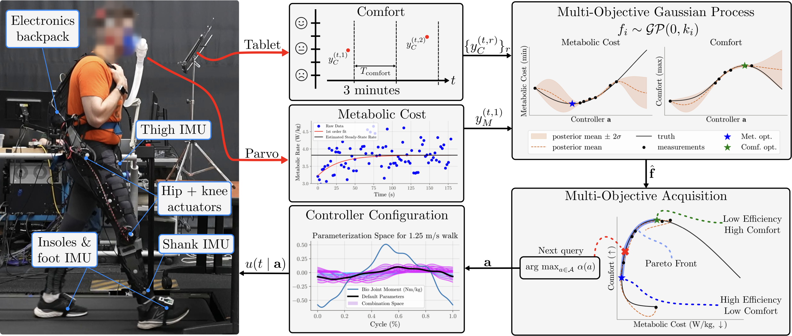
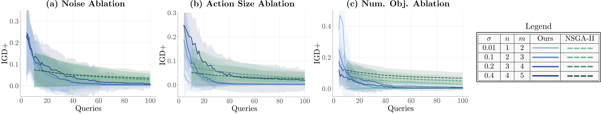
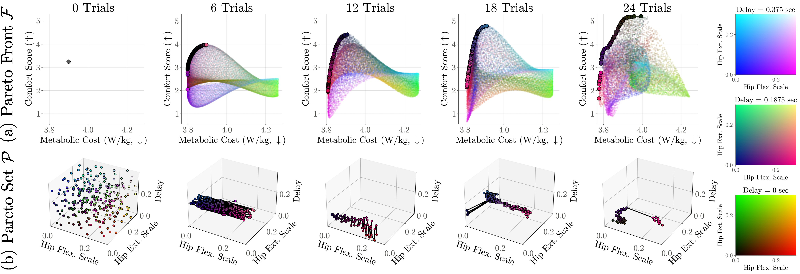
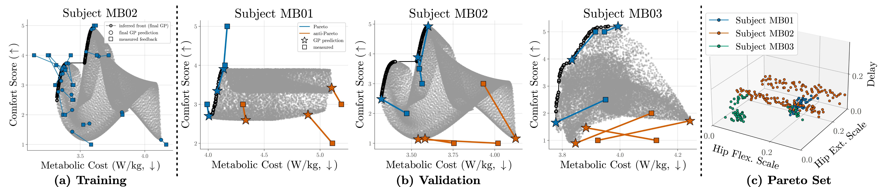

MO-HILBO
Multi-Objective Human-in-the-Loop Bayesian Optimization of a Lower-Limb Exoskeleton
Abstract
Human-in-the-loop optimization (HILO) is a common approach for optimizing the control of assistive
devices to account for the wearer's unique biomechanics and subjective preferences. However, despite
research suggesting that a person may have a different prioritization of objectives depending on
time-varying factors such as the environment, their mood, or energy levels, existing HILO approaches
only consider a single objective or enforce a fixed weighting on a set of objectives. Neither approach
is capable of representing an individual's preferences over objectives. In this work, we
propose Multi-Objective Human-in-the-loop Bayesian Optimization (MO-HILBO), which builds on explicit
multi-objective Bayesian optimization to efficiently infer a personalized set of Pareto-optimal
controllers. We compare our approach with an existing multi-objective HILO method and experimentally
demonstrate MO-HILBO on a lower-limb exoskeleton across two objectives: metabolic cost (efficiency) and
ordinal human feedback (comfort). We find that MO-HILBO (1) discovers Pareto-optimal controllers, and
(2) that the pairwise ordering of points on the Pareto front itself is consistent with validation
trials. Lastly, we open-source mohilo, a Python package for running both HILO and
MO-HILBO on wearable devices.
MO-HILBO on a lower-limb exoskeleton across two objectives: metabolic cost, measured by indirect calorimetry, and subjective comfort, recorded on a tablet. The protocol identifies the Pareto set of controllers (bottom) by learning a probabilistic surrogate of the Pareto front (top) directly from human feedback.
Overview Video
Method

MO-HILBO efficiently identifies the Pareto set of mutually optimal actions across multiple objectives. Like traditional HILO, it cycles over three steps: (1) collecting feedback from human users, (2) updating the belief of the underlying objective function(s) from that feedback, and (3) selecting new queries for the next iteration with a multi-objective acquisition function. We apply MO-HILBO to a lower-limb exoskeleton across two objectives: subjective comfort, given as ordinal labels, and metabolic cost, measured by indirect calorimetry.
Synthetic Experiments
We compare MO-HILBO against Zhang et al.'s NSGA-II-based multi-objective HILO method on a synthetic test domain that mirrors a human-subject study: high observation noise and a small feedback budget. We measure approximation quality with the inverted generational distance plus (IGD+), where lower is better, averaged over 50 runs per configuration.

Across noise level, action dimension, and number of objectives, MO-HILBO consistently reaches a lower IGD+ than NSGA-II under a small sample budget and high measurement noise—precisely the regime a human-subject protocol operates in.
Human-Subject Study
We demonstrate MO-HILBO on a real lower-limb exoskeleton, optimizing three controller parameters (a temporal delay and two torque-scaling coefficients) across two objectives: metabolic cost and ordinal comfort feedback collected on a tablet. Each subject's Pareto set is discovered directly from their own feedback, with no assumption about how they weigh comfort against efficiency.

A subject's Pareto set progression throughout optimization: it begins as the entire action box and converges toward low delay, low hip-extension scale. For this subject, hip-flexion scale was the primary decision variable trading off comfort against efficiency—MO-HILBO reduces the search space from the full 3D action box (bottom left) to a compact, near-1D Pareto set (bottom right).

Predicted versus measured points and discovered Pareto sets. (a) A fitted multi-objective GP where the training data cluster near the Pareto front—evidence that MO-HILBO's acquisition function explores and refines the front rather than the whole action space. (b) Held-out validation points (stars), unseen during training, spaced across the front. (c) Overlayed Pareto sets across subjects: sets rarely overlap in action space, and while subjects' optimal controllers vary in flexion/extension torque, none require a high delay.
BibTeX
@article{janwani2027mohilbo,
title = {Multi-Objective Human-in-the-Loop Bayesian Optimization of a Lower-Limb Exoskeleton},
author = {Janwani, Neil and Lerner, Matthew T. and Young, Aaron J. and Tucker, Maegan},
journal = {arXiv preprint},
year = {2027}
}